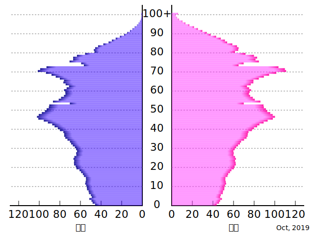

人口分布, 人口増加
-
- 居住地域(エクメーネ)
- 人間が日常的に居住している場所。
-
- 非居住地域(アネクメーネ)
-
人間が居住していない地域。
南極北極や砂漠など。 あるいは標高の高すぎる山とか。
-
- 可容人口
- 地球が養える最大限の人口のこと。
-
- 人口論 By マルサス
- 人口は等比数列的に増加するのに対し、食料は等差数列的に増加するため、人口過剰と食糧不足が起き、社会に貧困と悪徳を生むので人口抑制が必要という考え方。
-
- 合計特殊出生率
- 1人の女性が一生の間に産む子供の数。
- 各国で静止人口となるそれを人口置換水準という。先進国では一般的には約2.1
国全体の人口ピラミッド
|
ピラミッド型 富士山型 |
釣り鐘型 ベル型 |
つぼ型 |
| 主に発展途上国で見られる。 | 主に先進国で見られる。 | 先進国の中でも少子化が進んだところで見られる。 |
| 多産多死型 | 少産少死型 | 少産少死型 |
地域ごとの人口ピラミッド
|
都市型 星型 |
ひょうたん型 | |
| 主に都市[都市/農村]で見られる。 | 主に農村[都市/農村]で見られる。 | |
| 生産年齢人口が流入してこのようになる。 | 生産年齢人口が流出してこのようになる。 |
日本の現状
現在日本は少産少死で人口減少中。
 画像出典:wikimedia日本の年齢別人口の特異な点
-
- 第一次ベビーブーム
-
終戦後すぐ。
人がすごく多く生まれた。
今の75歳前後
-
- ひのえうま/丙午
- 江戸時代の事件から起こった迷信のせいで、出生数が少なくなる。
- 次は西暦2026年
-
- 第二次ベビーブーム
-
第一次ベビーブームの子がたくさん生まれた。
今の50歳前後。
過疎過密問題
1960年の高度経済成長で、向都離村(四字熟語)の傾向が大きくなった。 ⇒ 人口の不均衡分布
-
- ドーナツ化現象
-
都市から郊外へ人が移っていってしまう現象。
都市の空洞化が起こり、悪い時では、昼間活気があふれる都心がゴーストタウン化する。
-
- スプロール現象
-
都市計画がしっかり策定されないために、都市が無秩序に拡大してしまう現象のこと。
田園地帯破壊、自動車増加などにより大気汚染、インフラ料金の上昇などにとどまらない弊害が生まれる。
-
- Uターン現象
- 地方(農村)で生まれた人が、都心に一度は出てきたものの、地元に戻る現象。
-
- Jターン現象
- 地方で生まれた人が、都心に出て、地元とは別の地方(農村)に行くこと。
-
- Iターン現象
- 都心で生まれた人が、地方(農村)に行くこと。
人口移動
経済的理由
-
- 欧州→中南米
- ラテン系の人たちの新大陸入植
- cf. アメリカンドリーム, タウンシップ制
-
- 日系移民
-
明治元年: ハワイ
明治41年: ブラジル
-
- 華僑
- 中国南部→世界(主に東南アジア)
-
- ゴールドラッシュ
- オーストラリア, アメリカでの金山発見による人口集中
-
- 西漸運動
- アメリカ開拓のために、アメリカ東部からアメリカ西部へと、西へ西へと移動する。
- 出稼ぎ
政治的理由(強制移動含む)
-
- 奴隷貿易
-
アフリカ→アメリカ大陸
農業, 開拓のため
-
- オーストラリアへの入植
- イギリスの罪人に対する流刑として。
-
- シベリア開拓
- 開拓のために、ロシアの罪人をロシア西部からロシア東部へ
-
- 屯田兵
-
{東北, 北陸}→北海道
北海道の開発と警備のため
宗教的理由
-
- プロテスタントによるアメリカ移住
- 英国教会の信仰に反対し、弾圧を逃れるために、そして信仰の自由を求めてメイフラワー号に入植した。
-
- イスラエル建国運動/シオニズム運動
- 世界各地から、パレスチナが集まっている